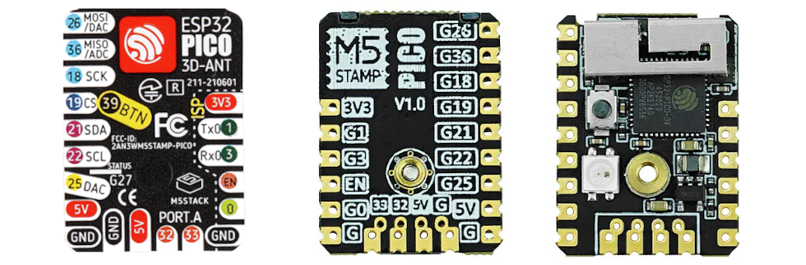
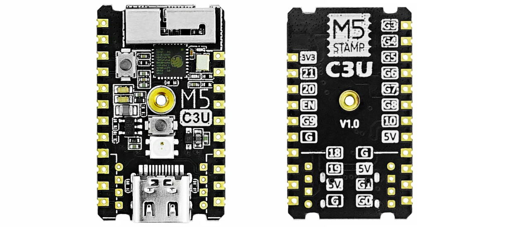
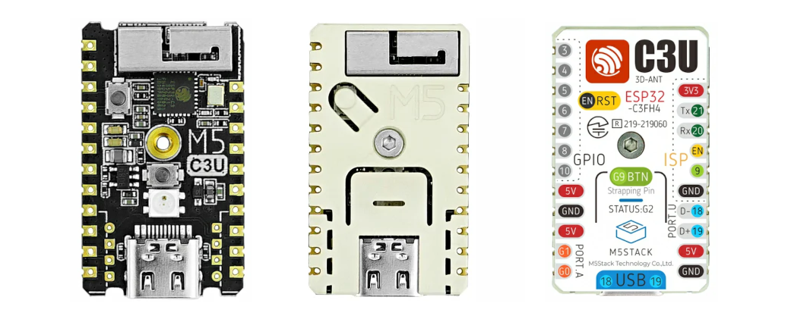
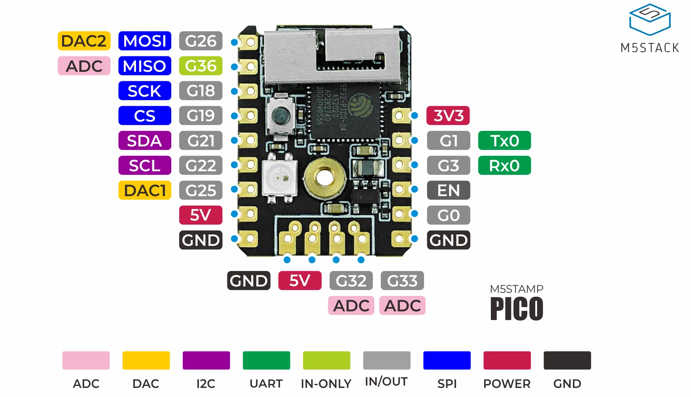
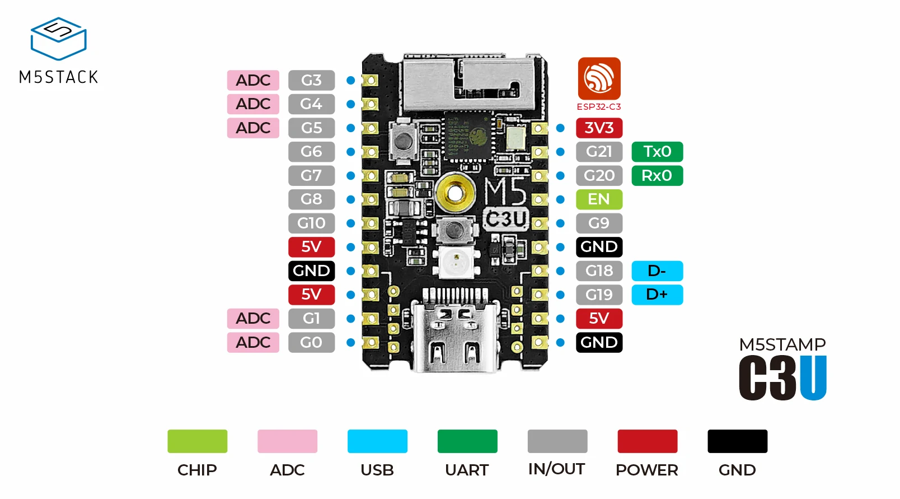
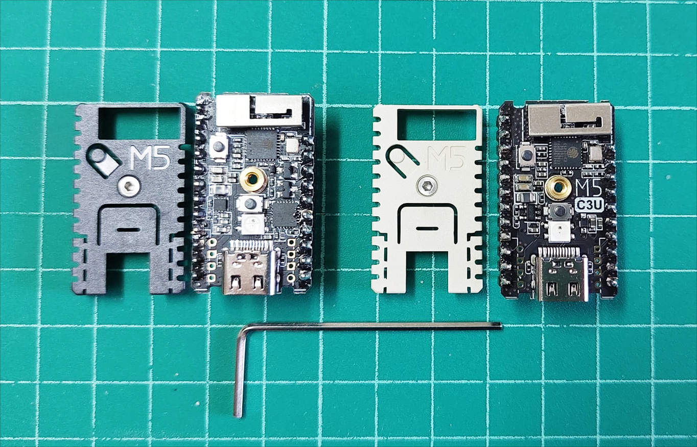
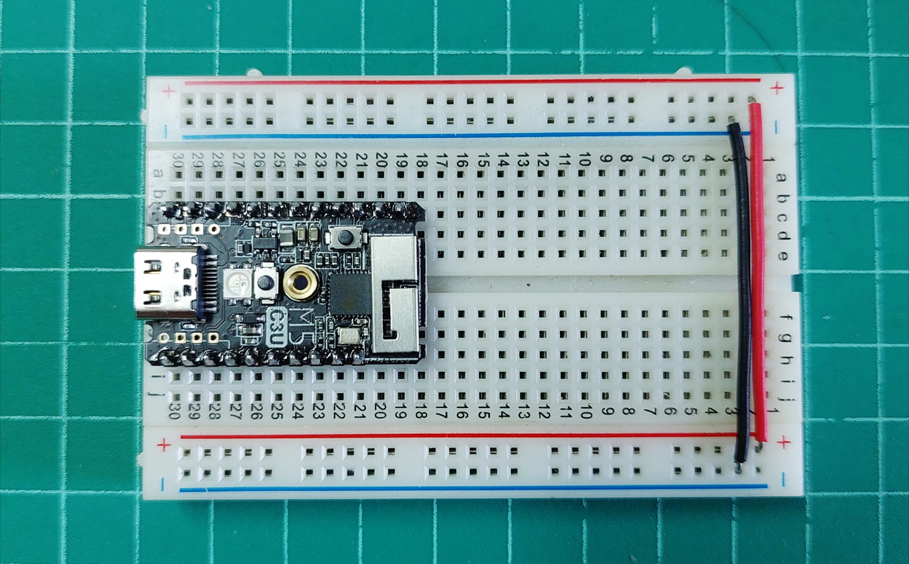
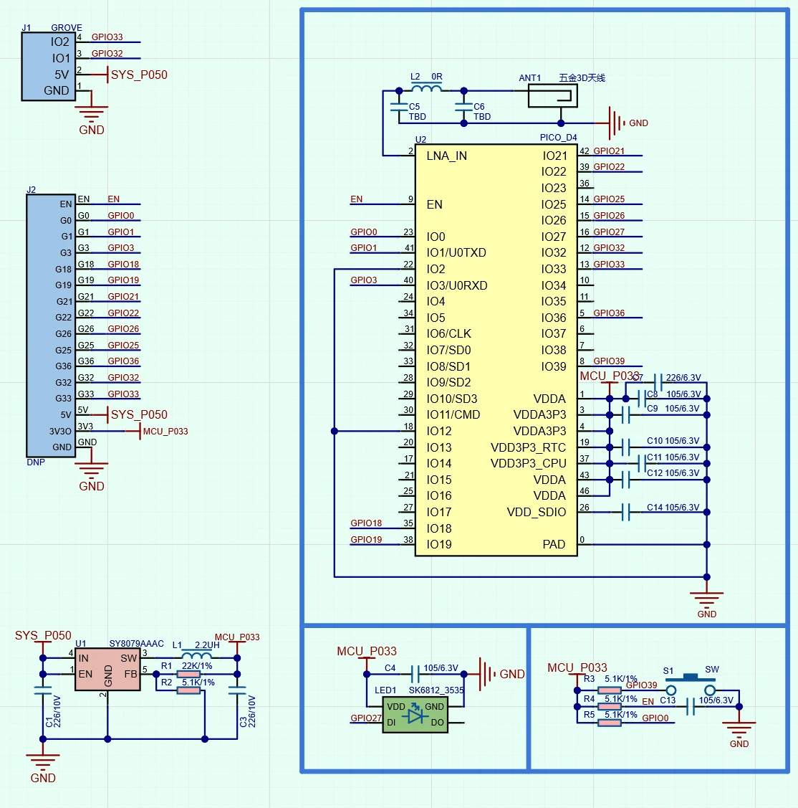
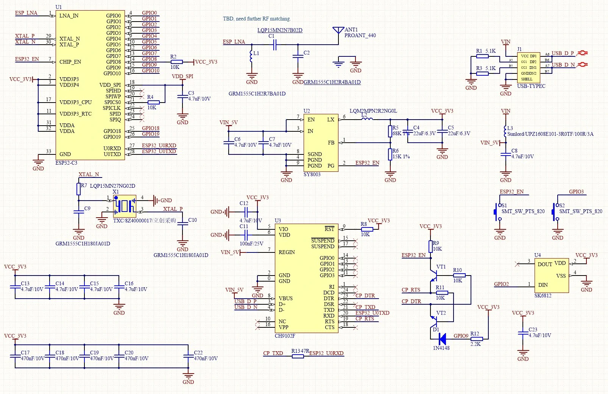
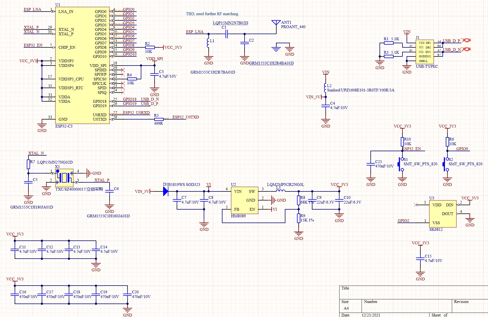

แนะนำการใช้งานบอร์ด M5Stamp ในเบื้องต้น#
▷ M5Stamp#
บริษัท M5Stack Technology Co., Ltd. (ประเทศจีน) ผลิตและจำหน่ายบอร์ดไมโครคอนโทรลเลอร์หรืออุปกรณ์ที่ใช้ชิป Espressif ESP Series SoCs ในหลายรูปแบบให้เลือกใช้งาน ตัวอย่างของโมดูลที่มีขนาดเล็กของ M5Stack ได้แก่
- Atom Series (ESP32-PICO-D4 SiP)
- M5StickC Series (ESP32-PICO-D4 SiP)
- M5Stamp Series
บทความนี้จะกล่าวถึงการใช้งานในเบื้องต้นสำหรับบอร์ดหรือโมดูล M5Stamp Series (Pico, C3, C3U) เท่านั้น
→ แนะนำให้อ่านบทความที่เกี่ยวข้อง: การเริ่มต้นใช้งานชิป ESP32-C3 (RISC-V CPU Core)
▷ M5Stamp Series Modules#
โมดูล M5Stamp Pico และ M5Stamp C3 / C3U มีลักษณะคล้ายกัน แต่ก็มีความเหมือนและความแตกต่างดังนี้
- มี RGB LED (SK6812) จำนวนหนึ่งดวง ใช้สายอากาศแบบ 3D Metal Antenna สำหรับสื่อสารด้วย 2.4GHz WiFi / BLE
- ถ้าซื้อเป็นชุดอุปกรณ์ที่เรียกว่า M5Stamp Mate จะได้ Pin Headers (2.54mm spacing) มาให้สำหรับบัดกรีเอง และมีฝาครอบพลาสติกทนความร้อน (ใช้ M2 Hex Screw เป็นตัวยึด) แถมสติกเตอร์มาให้ด้วย
- โมดูล M5Stamp Pico (ขนาด 24 x 18 มม.) มีขนาดเล็กกว่า และมีจำนวนขา GPIO น้อยกว่า (12 GPIO pins) แต่โมดูล M5Stamp C3 / C3U (34 x 20 มม.) มีขา 14 GPIO pins
- โมดูล M5Stamp Pico มีชิป ESP32-PICO-D4 SiP (Dual-Core Xtensa LX6, 240MHz, Embedded SPI Flash 4MB) เป็นตัวประมวผลหลัก
- โมดูล M5Stamp Pico ไม่มีปุ่มรีเซต แต่มีปุ่มกด User Button ที่ขา GPIO39 (5.1kΩ Pullup) เนื่องจากว่าไม่มีชิป USB-to-Serial ดังนั้นจะต้องใช้อุปกรณ์เสริมนำมาต่อเพิ่มสำหรับการอัปโหลดเฟิร์มแวร์ด้วย (ใช้ขา 6 ขา ได้แก่ 3.3V, G1/TXD, G3/RXD, EN, G0, GND) และอาจทำให้ไม่สะดวกสำหรับผู้ใช้
- โมดูล M5Stamp C3 / C3U มีชิป ESP32-C3FH4 (Single-Core RISC-V, 160MHz, Embedded SPI Flash 4MB)
- โมดูล M5Stamp C3 มีชิป USB-to-Serial IC (CH9102F) ที่เชื่อมต่อกับ USB แต่โมดูล M5Stamp C3U ไม่มีชิปดังกล่าว และมีขา GPIO18/GPIO19 เชื่อมต่อกับ USB D-/D+ ตามลำดับ
- โมดูล M5Stamp C3 / C3U มีทั้งปุ่มรีเซต และปุ่ม BOOT และมีพอร์ต USB Type-C
- การเลือกใช้งานไอซีตัวแปลงแรงดัน 5V-to-3.3V Converter แตกต่างกันดังนี้ (มี VIN=+5V)
- M5Stamp Pico: *Silergy SY8079 (SOT23-5)
- M5Stamp C3: Silergy SY8003 (SOT23-5)
- M5Stamp C3U: GateMode HM8089 (SOT23-5)
การเขียนโปรแกรมสำหรับ M5Stamp ทำได้หลายวิธี เช่น
- ใช้ M5Stack UIFlow ซึ่งเป็นวิธีการเขียนโปรแกรมด้วยการต่อบล็อกเชิงกราฟิก
- ใช้ภาษา MicroPython (for ESP32)
- ใช้ภาษา C/C++ เช่น Arduino API หรือ ESP-IDF SDK

รูป: โมดูล M5Stamp Pico (v1.0) ที่ได้ใส่ฝาครอบพลาสติกและมีแผ่นสติกเกอร์ปิดทับด้านหน้า

รูป: โมดูล M5Stamp C3U (v1.0) มุมมองด้านหน้าและด้านหลัง

รูป: โมดูล M5Stamp C3U (v1.0) ที่ได้ใส่ฝาครอบพลาสติกและมีแผ่นสติกเกอร์ปิดทับด้านหน้า
▷ PinOut#
ถัดไปมาลองดูตำแหน่งขาของโมดูล M5Stamp ดังนี้

รูป: ผังแสดงตำแหน่งขาของโมดูล M5Stamp Pico (v1.0)

รูป: ผังแสดงตำแหน่งขาของโมดูล M5Stamp C3 (v1.0)

รูป: ผังแสดงตำแหน่งขาของโมดูล M5Stamp C3U (v1.0)

รูป: โมดูล M5Stamp C3 & C3U Mate
เมื่อได้บักดรีขา Male Pin Headers แล้ว ก็สามารถใช้โมดูล M5Stamp สำหรับการต่อวงจรบนเบรดบอร์ดได้

รูป: การใช้งานโมดูล M5Stamp C3U ร่วมกับเบรดบอร์ด
▷ Schematic#
ในส่วนนี้ได้รวบรวมผังวงจรของโมดูล M5Stamp มานำเสนอไว้

รูป: ผังวงจรสำหรับ M5Stamp Pico (v1.0)

รูป: ผังวงจรสำหรับ M5Stamp C3 (v1.0)

รูป: ผังวงจรสำหรับ M5Stamp C3U (v1.0)
▷ กล่าวสรุป#
บทความนี้ได้นำเสนอรายละเอียดในเบื้องต้นเกี่ยวกับโมดูลในซีรีย์ M5Stamp ของบริษัท M5Stack เพื่อช่วยในการพิจารณาและเลือกใช้งานตามความเหมาะสม
This work is licensed under a Creative Commons Attribution-ShareAlike 4.0 International License.
Created: 2022-07-28 | Last Updated: 2022-07-29